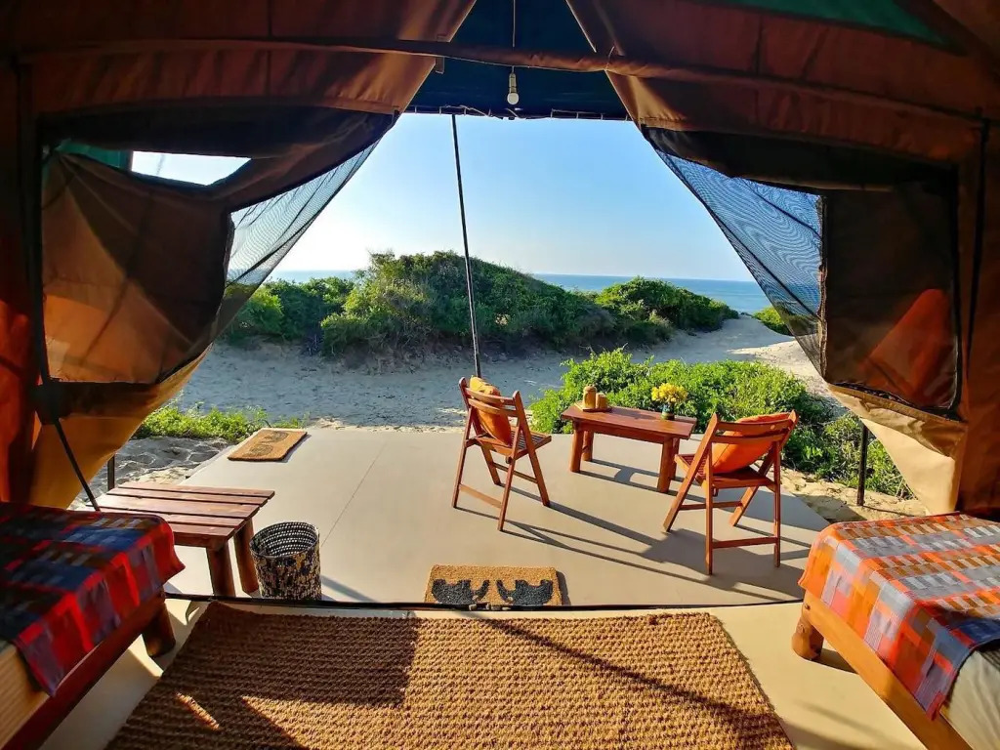
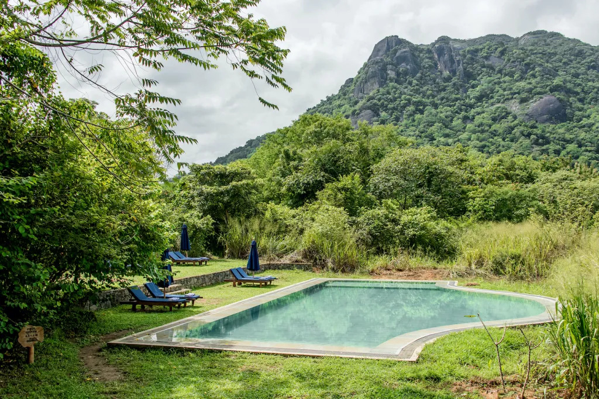
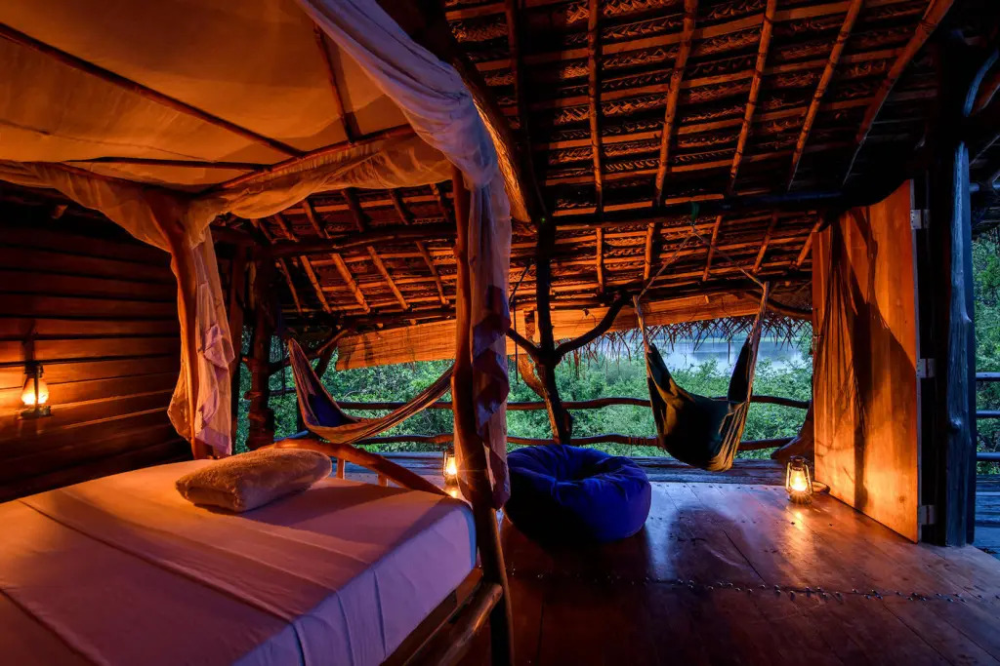

Back of Beyond, Various Locations
Back of Beyond offers several sustainable retreats across Sri Lanka. All of their locations have
been planned and developed with minimal disruption to their surrounding areas.

Gal Oya Lodge, Ampara
Gal Oya Lodge is the ideal hideout for those seeking adventures in the Sri Lankan jungle. In
addition to elephant safaris and birdwatching expeditions, you can visit the Vedda—the
forest-dwelling, indigenous people of central Sri Lanka.

The Mudhouse, Anamaduwa
A rustic getaway, the Mudhouse is on a specular 60 acres of land next to a lake. It has been
designed as a traditional Sri Lankan village, with cow dung floors and palm-thatched roofs.